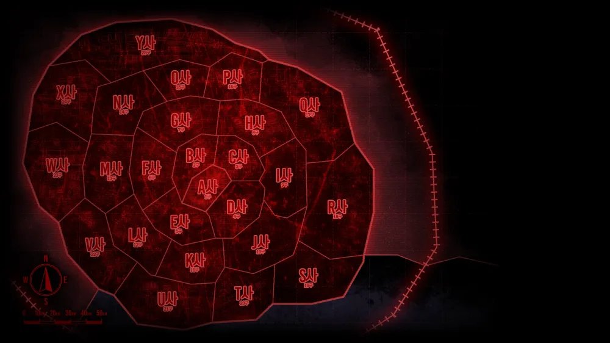

세계관 (Worldview)
거대한 도시와 26개 구역
'날개' 기업이 지배하는 세계
이곳은 거대한 하나의 '도시'입니다. 도시는 A부터 Z까지 총 26개의 구역으로 나뉘어 있으며, 각 구역은 거대 기업인 '날개'들에 의해 통치되고 있습니다. 뒷골목의 참혹함과 둥지의 안락함이 공존하는 이 잔혹한 세계에서, 림버스 컴퍼니는 각지에 흩어진 환상체의 알, '황금가지'를 회수하기 위해 나아갑니다.

거대한 도시와 26개 구역
이곳은 거대한 하나의 '도시'입니다. 도시는 A부터 Z까지 총 26개의 구역으로 나뉘어 있으며, 각 구역은 거대 기업인 '날개'들에 의해 통치되고 있습니다. 뒷골목의 참혹함과 둥지의 안락함이 공존하는 이 잔혹한 세계에서, 림버스 컴퍼니는 각지에 흩어진 환상체의 알, '황금가지'를 회수하기 위해 나아갑니다.